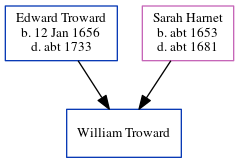

Isaac Mockett, the husband of Martha Cowell (the six times great-aunt of Nigel Horne), and married Martha at St. Alphege's Church, St Alphege Lane, Canterbury, Kent, England on 28 Nov 17381.
Citations
Kent Marriages And Banns - Findmypast
Family Tree

Map
Generated by ged2site. Last updated on Jul 3, 2024